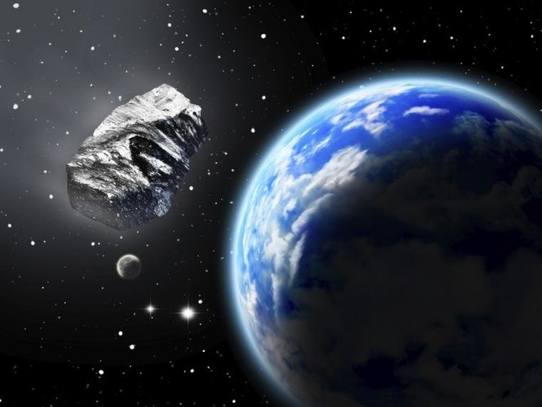
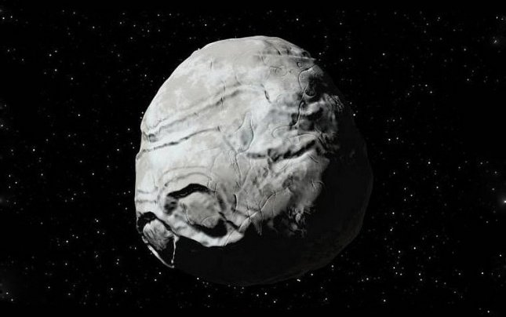
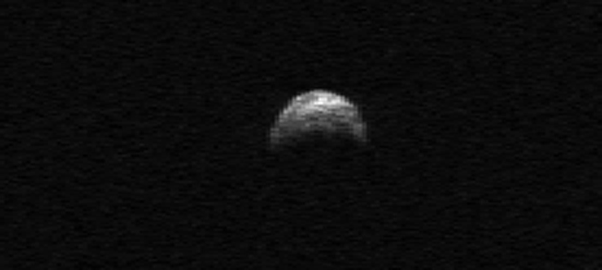
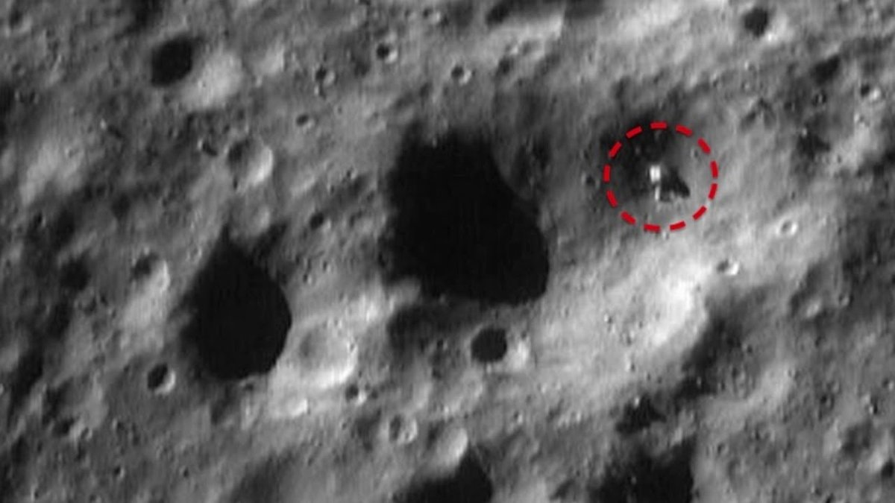
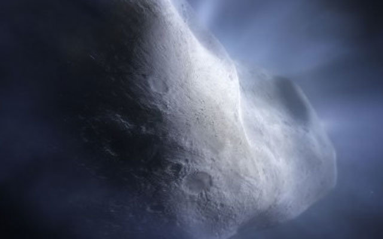
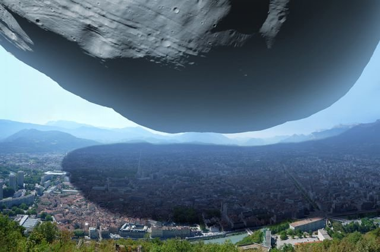

Апофис

Был открыт в 2004 году и считался наиболее опасным для человечества. Максимально опасным периодом признали 2036 год, но в 2013 году астероид, пройдя мимо планеты на расстоянии около 14 млн. километров, немного изменил свою траекторию, что значительно снизило риск столкновения в будущем. Однако объект все так же остается очень опасным. Апофис обладает диаметром чуть больше 300 метров и весом 27 млн. тонн. Если такая штука рухнет на Землю, то сила удара будет сравнима со взрывом нескольких атомных бомб. Начнутся массовые землетрясения до 6,5 баллов, а скорость ураганов достигнет более 800 м/с.
2007 TU24

Открыт астероид 11 октября 2007 года, а 29 января 2008 года пролетел мимо Земли на расстоянии 550 тыс. км. Следующее опасное и очень близкое сближение произойдет уже в 2027 году и ученые считают, что уровень угрозы очень высок. Проблема с 2007 TU24 заключается в том, что каждые 3 года он пересекает земную орбиту, что делает его потенциально опасным все время. Однако, согласно прогнозам ученых, максимальную угрозу для Земли 2007 TU24 будет представлять в 2170 году, так что пока можно спать спокойно.
Дуэнде

Его размеры весьма скромны и в диаметре он не более 30 метров при весе 40.000 тонн. Несмотря на то, что его размеры относительно не велики и при вхождении в атмосферу большая часть взорвется и сгорит, угроза падения осколков и их достижение поверхности очень вероятна. Орбита Дуэнде находится в резонансе с земной 1:1, а значит, период обращения вокруг Солнца у нас примерно одинаков. То есть, говоря проще, Дуэнде все время представляет для нас угрозу, но специалисты советуют расслабиться, так как эти шансы на данный момент 1:14.000.
2005 YU55

Открыт 28 декабря 2005 года и сразу же признан очень опасным. К тому же, стоит отметить, что его диаметр более 400 метров. В ноябре 2011 года научное сообщество вздрогнуло, когда 2005 YU55 приблизился к Земле на 325 тыс. километров (это даже ближе, чем Луна). Заметили астероид практически в последний момент, потому что его поверхность аномально черная и его практически не видно на ночном небе. На сегодняшний день объект считается одним из наиболее опасных из-за своей нестабильной эллиптической траектории движения. Предсказать его поведение попросту невозможно.
Эрос

Является первым в истории открытым околоземным астероидом, что произошло в 1898 году. К тому же Эрос стал первым в истории астероидом, который обзавелся собственным искусственным спутником, когда аппарат NEAR Shoemaker осуществил посадку на поверхность в 2001 году. Размеры пугающие и достигают 33 км. в поперечнике, а скорость движения составляет 24,36 км/с. Из-за формы, похожей на арахис, сила тяжести в астероиде распределена неравномерно, а значит и орбита у него не самая стабильная. Если этот объект достигнет поверхности Земли, то катастрофа, которая привела к вымиранию динозавров, покажется детской сказкой. На сегодня шансы такого "свидания" достаточно невелики.
2001 WN5

Открыт 20 ноября 2001 года. Размер около 1,5 км в поперечнике, а траектория движения очень нестабильна, что препятствует его детальному изучению. 26 июня 2028 году объект приблизится к Земле на 250 тыс. км, а значит наблюдать его можно будет даже в бинокль. Если 2001 WN5 даже и не войдет в атмосферу Земли, то будет способен привести к сбоям в работе орбитальных спутников.